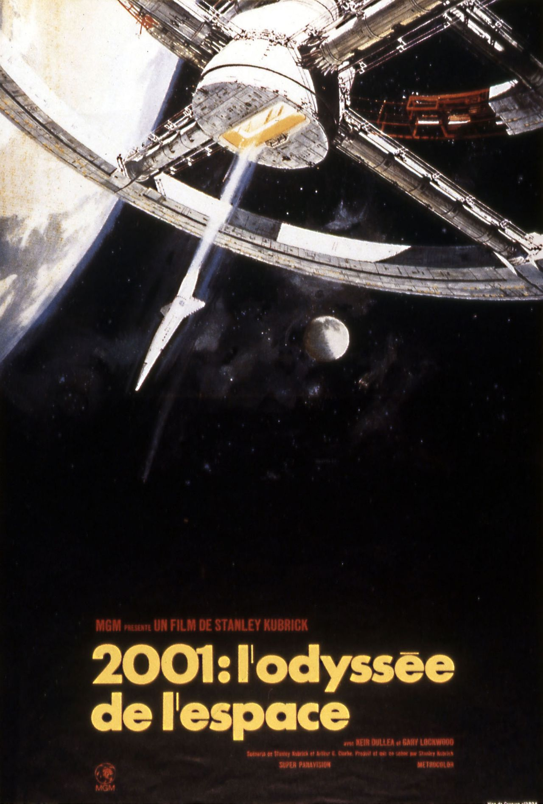

Rubrique culturelle
Une des plus grandes oeuvres de Stanley Kubrick, et pourtant...
Stanley Kubrick est un réalisateur de renommée mondiale. Auteur de talent des très célèbres Shining et Full Metal Jacket, il surprend encore une fois son public en sortant un film à la fois spectaculaire de par ses effets spéciaux et profond par son écriture : c’est le début de la légende de 2001 L’Odyssée de l’espace.
Sorti en 1968 ce film aborde les sujets de l’espace mais aussi du temps. Il est, dès sa sortie, un immense succès commercial et plait énormément à l’audience.
Le protocole exploration s’agit de laisser un blob seul, dans une boîte de pétri, à découvrir son environnement. Le protocole exploitation s’agit également d’un blob dans une boîte de pétri, mais cette fois-ci il a le droit à 4 flocons d’avoine, sa nourriture préférée.
Il a notamment reçu de nombreuses distinctions tels que l’oscar des meilleurs effets spéciaux en 1969 mais aussi le British Academy Film Awards également en 1969 pour la meilleure direction artistique et meilleure bande originale.
En plein désert, deux tribus de grands singes s'affrontent autour d'un point d'eau. L'apparition d'un mystérieux monolithe fascine l'un des primates, qui bientôt créé l'outil lui permettant de dominer ses congénères. Des millions d'années plus tard, des astronautes découvrent un monolithe identique dans le sol lunaire. Et, grâce à l’avancée de la technologie, l’humanité trouve l'origine de ce mystérieux monolithe: Jupiter. S’en suit alors un périlleux voyage inédit pour l’humanité dans le but de désépaissir le mystère entourant le mystère des monolithes.
Contrairement aux avis des spectateurs de 1968, de nos jours, ce film a tendance à moins plaire voir à déplaire.
En effet, en interrogeant des personnes de notre classe, nous nous sommes rendu compte qu’une majorité d’entre eux n’avaient pas aimé ce film.
Grâce à leurs arguments, on peut dire que ce film ne correspond plus aux standards cinématographiques actuels notamment à cause de son rythme lent, de son manque d'action et de son manque de paroles.
Et donc, au fur et à mesure du temps, la légende qu’était 2001 L’odyssée de l’espace commencera à perdre de sa superbe.
Cet article a été rédigé par Arthur Loiseau